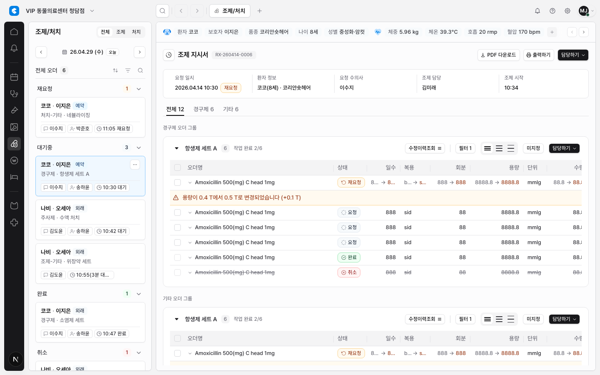
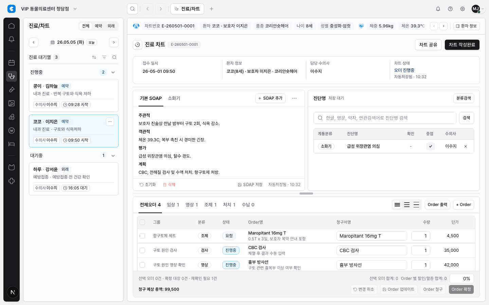
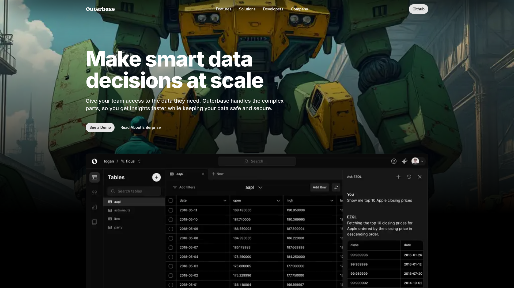

Table Header Interaction / Sort / Filter Ergonomics Research
결론은 명확하다. CLAiR 테이블 헤더는 모든 컬럼에 모든 affordance를 노출하는 방식이 아니라, 컬럼의 역할에 따라 정렬, 필터, 메뉴, 리사이즈를 명시적으로 켜는 방식이어야 한다. 다만 한 테이블에서 컬럼 리사이즈를 제공한다면 사용자 혼란을 줄이기 위해 자격이 있는 데이터 컬럼 전체에 같은 리사이즈 hit zone을 제공해야 한다.
현재 문제
- 조제/처치에는 일부 헤더에서만 grab/resize affordance가 보여 사용자가 어떤 컬럼을 조작할 수 있는지 예측하기 어렵다.
- 진료/차트, 조제/처치, 수납, 입원, 고객관리, 병원관리의 테이블 성격이 다른데 header interaction 기준은 아직 화면별로 흩어져 있다.
- 정렬/필터/컬럼 메뉴/리사이즈가 같은 UI처럼 섞이면 clinical review 화면에서 과한 조작 가능성으로 보일 수 있다.


외부 레퍼런스 요약
| 레퍼런스 | 관찰 | CLAiR 적용 |
|---|---|---|
| MUI X sorting, filtering, column dimensions, column menu | 컬럼별로 sortable/filterable/resizable/menu를 끄거나 켤 수 있다. 컬럼 폭은 min/max와 resize callback을 가진 별도 concern이다. | 헤더는 role 기반 opt-in. 정렬, 필터, 메뉴, 리사이즈를 한 뭉치로 만들지 않는다. |
| AG Grid column sizing, column menu, sorting | 컬럼 리사이즈는 기본적으로 헤더 오른쪽 edge interaction이며, 메뉴/필터 버튼은 컬럼 정의로 억제할 수 있다. | 리사이즈는 영구 아이콘보다 edge hit zone이 맞다. 메뉴는 admin-heavy grid에 제한한다. |
| TanStack column definitions, sorting, filtering, column sizing | Accessor column은 sort/filter 대상이 될 수 있지만 display column은 데이터 모델이 없어 정렬/필터가 불가능하다. | checkbox, action, expander, warning row 같은 display column은 static으로 고정한다. |
| shadcn/ui Data Table | 단일 완성형 DataTable보다 TanStack + shadcn primitives로 각 테이블 요구를 조합하는 방식을 권장한다. | CLAiR도 공유 header cell과 toolbar primitive를 만들되 table kind별 설정은 열어둔다. |


CLAiR 적용 원칙
| 테이블 클래스 | 대상 화면 | 정렬/필터/메뉴/리사이즈 기준 |
|---|---|---|
clinical-review |
임상병리 검사 결과, 영상검사 Order 상세 | 기본은 static. 명확한 scalar column만 정렬. 컬럼 메뉴는 숨김. 리사이즈는 overflow가 반복되는 경우에만. |
operational-worklist |
조제/처치, 입원, 진료/차트 오더 작업 | 상태/담당/시간/금액처럼 업무 우선순위 판단에 쓰는 컬럼만 sort/filter. 리사이즈는 data column 전체에 일관 적용. |
master-data-grid |
고객관리, 병원관리 Order 관리 | 정렬, 필터, 컬럼 표시/숨김 메뉴를 가장 폭넓게 허용. 검색/상태/카테고리 filter는 toolbar에 둔다. |
financial-edit-grid |
수납 청구 항목 | 금액/수량 입력과 합계 인지가 우선. 리사이즈는 허용하되 정렬/필터는 제한적으로 시작한다. |
헤더 셀 정책
- 정렬: header label 또는 label button에서만. 활성 정렬은
aria-sort와 아이콘으로 항상 표시한다. - 필터: status/category/담당자 같은 high-level filter는 toolbar가 우선이다. 컬럼별 advanced filter는 master-data-grid부터 도입한다.
- 메뉴: hide/pin/copy/column settings가 필요한 admin grid에만 노출한다. clinical table 모든 컬럼에 더보기 메뉴를 붙이지 않는다.
- 리사이즈: resize mode가 켜진 테이블에서는 checkbox/action을 제외한 모든 data column header edge에 같은 hit zone을 둔다.
- 비활성 헤더: static header에는 hover background, pointer cursor, chevron, hidden focus stop을 주지 않는다.
아이콘 제안
| 기능 | 아이콘 | 사용 방식 |
|---|---|---|
| 정렬 가능/미정렬 | ArrowUpDown |
sortable header hover 또는 menu trigger 안에서만. 항상 보이게 둘지는 table kind별로 결정. |
| 정렬 활성 | ArrowUp, ArrowDown |
활성 상태는 hover와 무관하게 표시. |
| 필터 | ListFilter 또는 Funnel |
toolbar filter는 ListFilter, 컬럼 filter active state는 Funnel 계열이 더 명확하다. |
| 컬럼/보기 설정 | Settings2, SlidersHorizontal |
컬럼 표시/숨김, view options에만 사용. density icon과 혼동하지 않는다. |
| 행/컬럼 액션 | MoreHorizontal |
row action 또는 explicit column menu trigger. |
| 리사이즈 | 아이콘 없음, 필요 시 GripVertical |
기본은 header separator edge + col-resize cursor. 아이콘을 항상 넣으면 시각 잡음이 커진다. |
공유 컴포넌트 제안
type EmrTableKind =
| "clinical-review"
| "operational-worklist"
| "master-data-grid"
| "financial-edit-grid";
type EmrHeaderInteraction =
| "static"
| "sortable"
| "filterable"
| "sortable-filterable"
| "menu"
| "compound";
type EmrColumnResize = "none" | "data-column";EmrTableHeaderCell: label, sort state, filter state, optional menu trigger, resize handle를 한 곳에서 소유한다.EmrTableToolbar: global search, status/category filters, density selector, view options 위치를 관리한다.useEmrColumnSizing: TanStack column sizing과 table min-width/fill width 규칙을 연결한다.EmrColumnMenu: master-data-grid에서만 hide/pin/sort/filter menu를 단계적으로 제공한다.
후속 구현 이슈 범위
- 전체 테이블 inventory를 기준으로
tableKind와 column interaction role을 선언한다. - 공유 header cell을 만들고 조제/처치 테이블에서 먼저 적용한다.
- 리사이즈는 resize-enabled table의 모든 data column에 동일하게 적용하고, checkbox/action column은 제외한다.
- 입원, 고객관리, 병원관리, 수납, 임상병리, 영상검사, 진료/차트로 확장한다.
- 정렬/필터는 fake UI 없이 실제 state가 연결된 컬럼부터만 노출한다.
검증 권장
- 1440, 1280, 1024 viewport에서 header affordance가 겹치지 않는지 캡처한다.
- 키보드 탭 순서가 static header에 걸리지 않는지 확인한다.
- 활성 sort/filter state가 hover 없이도 보이는지 확인한다.
- 리사이즈 가능한 테이블에서 모든 data column edge가 같은 pointer affordance를 갖는지 확인한다.
상태
PASS Research report created.
PASS Source design-system guide updated: docs/design/system/table-density-and-grid-ergonomics.md.
구현은 포함하지 않았다. 이 보고서는 다음 구현 이슈의 기준으로 사용한다.